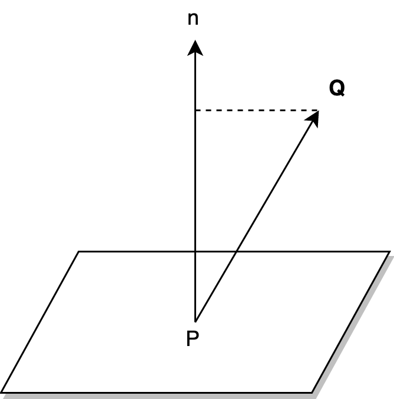

这篇文章主要是记录《统计学习基础》第二章感知机的学习过程。
Definition
感知机(Perceptron)是二分类的线性分类模型(Linear classification Model)，感知机学习是训练出一个可以将输入数据进行线性分离的超平面:
where $x\in \mathbf{R}^{n}, w\in \mathbf{R}^{n}$
$sign$是感知机的激活函数，和Logistic Regression的激活函数$sigmod$不同。
给定一个线性方程: $w\cdot x+b=0$, 对应于$\mathbf{R}^{n}$中的一个超平面。$w$是超平面的法向量, $b$是超平面的截距。
Distance Calculation
对于平面上的两点: $x_{1}, x_{2}$满足线性方程:
所以$w$是超平面的法向量。
Learning Policy
给定一个数据集 $T=\{ (x_{1},y_{1}), (x_{2},y_{2}),…,(x_{n},y_{n}) \}$, 假设存在某个超平面$S$:
可以将正实例和负实例点正确的划分到超平面的两侧: If $y_{i} = +1, \rightarrow w\cdot x+b \gt 0$ and $y_{i}=-1 \rightarrow w\cdot x+b \lt 0$. 则称数据集$T$是线性可分的(Linearly separable dataset)。
Loss Objective
Loss Function定义为误分类点到超平面$S$的总距离。那么如何计算空间中的一点$x_{i}$到超平面$S$的距离呢？我们先考虑简单的三维情况:

给定平面$S$上一点$P=[x_{0},y_{0},z_{0}]$, 空间内一点$Q=[x_{1},y_{1},z_{1}]$，法向量$n=[w_{1},w_{2},w_{3}]$, 有:
计算图中$Q$到平面$S$的距离:
将三维情况推广到$n$维，对于任意一点$x_{0}\in \mathbf{R}^{n}$, 它到平面$S$的距离为:
这里$\|w\|$表示$w$的$L_{2}$范数。这里我们只关心分类错误的数据$(x_{i},y_{i})$, 我们有以下关系:
所以:
对于错误分类点的集合$M$, 所有分类错误的点到超平面$S$的距离之和为:
进而，我们可以将损失函数写成:
如果没有误分类点，则$L(w,b)=0$, 否者$L(w,b)$一定是非负的。误分类点越少，$L(w,b)$越小。因此，我们的目标是找到合适的$w,b$值，使得$L(w,b)$尽可能等于0.
Learning Algorithm
感知机采用随机梯度下降法(stochastic gradient descent)来进行优化。在进行算法迭代的过程中，随机选取误分类点进行梯度下降，直至没有误分类点。
Loss Function的梯度为:
随机选取$(x_{i},y_{i})$，对$w,b$进行更新，其中$\eta(0\lt \eta \le 1)$为学习率(learning rate):
算法过程如下:
- 输入: $(x_{1},y_{1}),…,(x_{n},y_{n})$，$\eta(0\lt\eta\le1)$，输出: $w,b,f(x)=sign(w\cdot x+b)$
- 选取 $w_{0},b_{0}$
- 随机选取数据 $(x_{i},y_{i})$
- 如果 $y_{i}(w\cdot x_{i}+b)\le0$，更新$w,b$
- 回到(2)，直至没有误分类点
在上述算法中，步骤(2,3)是随机性的，因此，感知机在学习过程中如果采取不同的初值或是不同的误分类点进行$w,b$的更新，得到的超平面$S$是可以不同的。
Convergence Analysis
对于一个线性可分的数据集，通过上述算法，是否一定可以得到一个分类完全正确的超平面 $S$ 呢？下面梳理一下Novikoff定理得证明过程。
Novikoff:
- 存在满足条件$\| w_{opt} \| = 1$的超平面$w_{opt}\cdot x+b_{opt}=0$将数据集完全正确分开；且存在$\gamma\gt0$，满足：$y_{i}(w_{opt}\cdot x_{i}+b_{opt})\ge\gamma$，对于$i=0,1,2,…,N$
- 令$R=max\|x_{i}\|, i\in 1,2,…,N$，训练算法的迭代次数$k$满足:
证明：
在选取第$k$个误分实例前，我们有:
由于第$k$个实例是误分的，那么有：
更新$w,b$:
然后同过不等式来得到迭代次数$k$上界。
通过上述公式我们可以递推得到以下两个不等式:
联合$(1),(2)$可得：
得证，算法迭代次数$k$具有上界，所以算法是收敛的。如果数据集是不可分的，那么算法不会收敛，将产生震荡。感知机和支持向量机(SVM)的区别在于支持向量机对产生的超平面进行了约束，确保了只能产生唯一一个超平面，而感知机存在多个超平面，和算法中选取的$w,b$初值以及误分类点$(x_{i},y_{i})$的选择有关。
Dual Form
在原算法中，通过对$w,b$的更新，得到最终的最优值。$w,b$的更新公式如下:
假设算法经过$n$次达到收敛，每次选择$(x_{i},y_{i})$进行参数更新时，$\Delta w=\eta y_{i}x_{i}, \Delta b = \eta y_{i}$。假设在算法收敛过程中，点$(x_{i},y_{i})$共被选择了$n_{i}$次，那么最终得到的$w,b$为：
那么对偶形式下的感知机模型为：
算法步骤为：
- 初始化$n_{i}=0, \forall i\in N$，$N$表示总的分类点数；
- 随机选取数据$(x_{i},y_{i})$；
- 如果$y_{i}(\sum_{i=1}^{N} n_{i}\eta y_{i}x_{i}\cdot x + \sum_{i=1}^{N} n_{i}\eta y_{i})\le 0$，$n_{i} = n_{i}+1$；
- 到$(2)$，直到数据全部分类正确。
总结：对偶形式和原始形式的差别在于参数的更新，原始中我们迭代更新$w,b$，而在对偶形式中我们更新随机选择误分类点的次数$n_{i}$。对偶形式相对原始形式在某种情况下会有计算更快的优势。在原始形式中，每次迭代，需要计算$w\cdot x$的內积, 其中$w,x\in \mathbf{R}^{n}$，计算量为$n \times n$。而在对偶形式中，则需要计算$x_{i}\cdot x_{j}$，计算量为$N \times N$。因此在分类数据点维数$n$很大时，使用对偶形式可以减轻计算复杂度。
Conclusion
本片博文详细推导了感知机定义，目标函数，算法，以及对偶形式。其中涉及到了随机梯度下降法(SGD)，打算最近在学习复习下相应的优化算法。